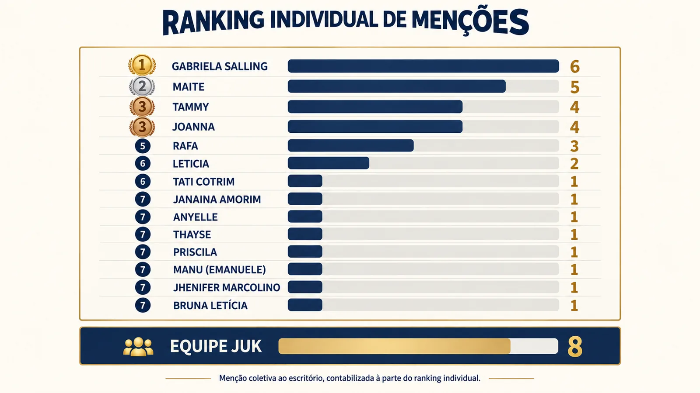

O que os números contam sobre o trabalho que ninguém vê na Juk Cattani

A CIC da Juk Cattani (Central de Inteligência do Cliente) vem consolidando, mês a mês, um retrato cada vez mais preciso da relação entre o escritório e os nossos clientes.
Os relatórios mensais são o resultado visível desse trabalho, e também sua ferramenta mais importante. Eles transformam decisões tomadas em reunião, muitas vezes sobre um único caso, em uma visão de conjunto. Assim vemos que padrões se repetem, o que precisa de ajuste e que mudanças já surtiram efeito.
Em agosto, esse conjunto cresceu: foram 42 feedbacks recebidos, 31,3% a mais que em julho. Trinta e quatro foram elogios, um crescimento de 21,4%, e se espalharam de um jeito que vale destacar. Ao todo, 40 menções individuais foram feitas a 14 profissionais diferentes, além de 8 menções coletivas direto à Equipe Juk.
A liderança do mês trocou de mãos pela terceira vez seguida, o que o próprio Comitê lê como sinal de saúde: reconhecimento se espalhando pelo time, não concentrado sempre na mesma pessoa.
Também mudou o que o cliente valoriza
Em julho, o assunto mais elogiado era orientação. Em agosto, virou atendimento, e o suporte jurídico saltou de 3 para 9 menções no período. A leitura da CIC é direta: o cliente está elogiando a experiência completa da entrega, do primeiro contato ao desfecho, não só o resultado do processo.
“É esse panorama ampliado que permite ao escritório enxergar, com dados e não apenas com percepção, a qualidade do trabalho que vem sendo entregue, e também dar a esse esforço o reconhecimento que ele merece dentro de casa.”
Tatiana Cotrim · Head de Relacionamento